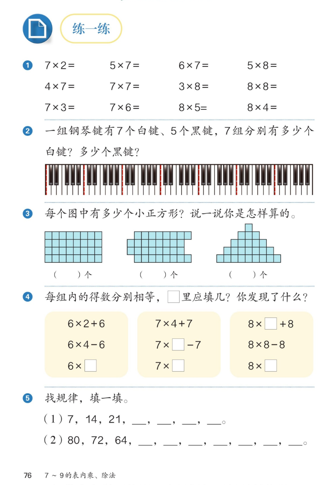

🔊 五、7~9 的表内乘、除法 · 课本第 76 页 · 练一练 1~5
人教版《数学》二年级上册 · 有声图文带读 · 先想后看解析 · 钢琴键 · 小正方形 · 找规律
题数
6
认知
2
强化
3
拓展
1
本页重点
口诀算得准 · 移补数正方形 · 加7减8规律
🎧 分两步学：
① 解析教材图片
——纯声音读图，读到哪一块哪一块闪动提示；关键处先倒计时让你思考，再在图片下方给出解析并朗读。
② 分层提问练习
——六道分层题（认知 / 强化 / 拓展），先思考再展开解析、朗读参考答案；这一步不再回到图片。
也可以随时点任意一句话、图上任意一块单独听；点课本文字卡还会展开答案。
教材图片（点块听读，读到哪块哪块闪）

📖 人教版《数学》二年级上册 · 课本第 76 页 · 图片仅供个人学习，版权归人民教育出版社所有
🤔 想一想（点我可跳过）
课本的文字（点句子：听读 + 看答案）
第①题
12 道算式得数
看答案 ▾
7×2=
14
，5×7=
35
，6×7=
42
，5×8=
40
；
4×7=
28
，7×7=
49
，3×8=
24
，8×8=
64
；
7×3=
21
，7×6=
42
，8×5=
40
，8×4=
32
；
💡 6×7 和 7×6 得数一样，都是 42
第③题
三个图都有多少个小正方形？
看答案 ▾
三个图都是
32
个，算式都是 8×4=32；
图1：每行 8 个，4 行，直接算；
图2、图3：
移一移、拼一拼
，拼成 4 行 8 列再算；
💡 形状变了，个数没变
第④题
得数相等，你发现了什么？
看答案 ▾
6×2+6=
18
，6×4−6=
18
，6×
3
=18；
7×4+7=
35
，7×
6
−7=35，7×
5
=35；
8×
6
+8=56，8×8−8=
56
，8×
7
=56；
💡 几个几再加一个几＝多 1 个几
第⑤题
找规律，填一填
看答案 ▾
(1) 7、14、21、
28
、
35
、
42
、
49
（每次加 7）；
(2) 80、72、64、
56
、
48
、
40
、
32
、
24
、
16
、
8
（每次减 8）；
💡 (1) 是 7 的口诀，(2) 是 8 的口诀倒着数
分层提问练习（先想后看解析）
✖️
认知
7×6 和 8×4 各等于多少？用哪句口诀？
看解析
🤔 想一想
解析：
7×6=
42
，口诀
六七四十二
；
8×4=
32
，口诀
四八三十二
。
🎹
认知
7 组钢琴键共有多少个白键？多少个黑键？
看解析
🤔 想一想
解析：
白键：7 个 7，7×7=
49 个
；
黑键：5 个 7，5×7=
35 个
；
💡 一组 7 白 5 黑，7 组就各乘 7
🔷
强化
图 2、图 3 不是长方形，为什么也是 32 个？
看解析
🤔 想一想
解析：
把多出的
移
到缺的地方，都能拼成 4 行 8 列；
所以都是 8×4=
32 个
；
💡 移补不改变个数，只改变形状
➕
强化
6×2+6 为什么等于 6×3？
看解析
🤔 想一想
解析：
2 个 6 加上 1 个 6，就是
3 个 6
；
所以 6×2+6=6×3=
18
；
💡 同理 8×8−8：8 个 8 减 1 个 8 剩 7 个 8
🧠
强化
8×8−8 等于 8×几？得数是多少？
看解析
🤔 想一想
解析：
8 个 8 减 1 个 8，剩
7 个 8
，等于 8×
7
；
得数
56
，口诀七八五十六；
💡 减一个几就是少乘一个几
🌈
拓展
80、72、64 这样数下去，最后一个数是几？为什么？
看解析
🤔 想一想
解析：
每次减 8：56、48、40、32、24、16、
8
；
最后一个数是
8
，因为一八得八；
🌈 这串数就是 8 的口诀倒着背
① 解析教材图片
② 分层提问练习
⏹ 停止
纯声音 + 高亮跟随 · 想好才出解析
← 返回导航